| Taper with Box 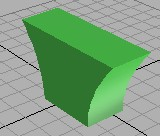 |
Taper with Box 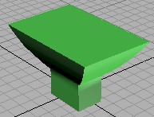 |
Taper with Box 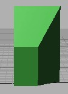 |
Taper with Sphere 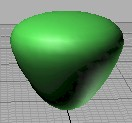 |
| Taper with Sphere 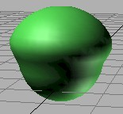 |
Taper with Cylinder 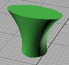 |
Twist with Box 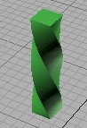 |
Twist with Box 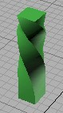 |
| Twist with Box 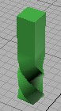 |
Twist with Sphere 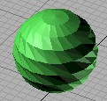 |
Twist with Cylinder 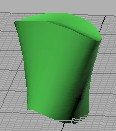 |
Twist with Cylinder 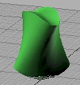 |
| Bend with Box 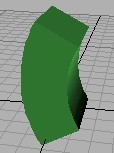 |
Bend with Box 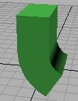 |
Bend with Sphere 
|
Bend with Sphere 
|
| Bend with Cylinder 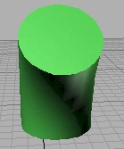 |
Multiple Modifiers:
Bend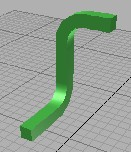 |
Multiple Modifiers:
Bend & Taper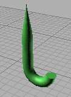 |
Multiple Modifiers:
Twist & Taper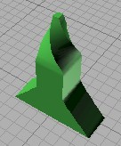 |